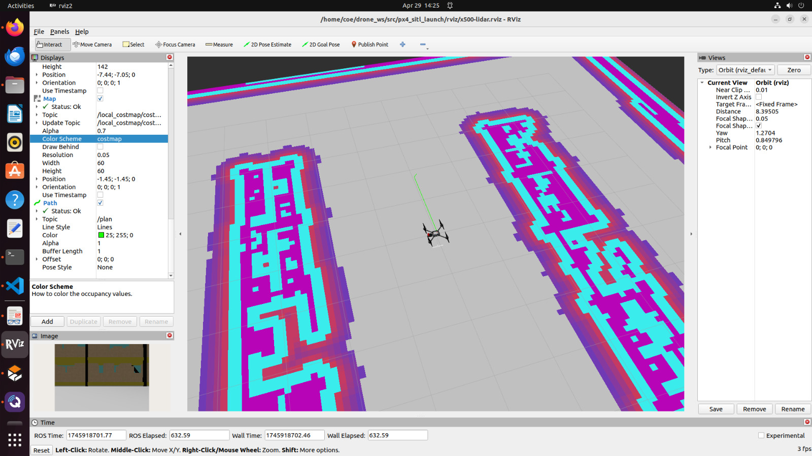

Outdoor Autonomous Flight
Indoor SLAM Mapping Results

Project Overview
This project involved developing an autonomous navigation system for the Holybro X500 v2 drone,
implementing both outdoor GPS-based navigation and indoor 2D SLAM capabilities. The system integrates
Pixhawk6C autopilot with ROS2 for robust flight control and environmental perception.
Hardware Configuration
Drone Frame: Holybro X500 v2
Autopilot: Pixhawk6C with M10 GPS
LiDAR: RPLidar A1 for indoor SLAM
Flight Controller: PX4 Autopilot System
Software Stack: ROS2 Humble Hawksbill
Communication: MAVLink protocol
Technical Implementation
Outdoor Navigation:
- GPS waypoint navigation with precision landing capabilities
- Real-time telemetry monitoring and mission planning
- Obstacle avoidance using ultrasonic sensors
- Automated takeoff, mission execution, and return-to-home functions
Indoor SLAM System:
- 2D SLAM implementation using RPLidar A1 for environment mapping
- Integration of slam_toolbox SLAM algorithm for mapping and localization
- Real-time pose estimation and map building in unknown environments
- Obstacle detection and avoidance in GPS-denied environments
Key Achievements
- Successfully implemented autonomous flight missions with 2-meter position accuracy
- Achieved real-time 2D mapping of indoor environments with 5cm resolution
- Integrated ROS2 with PX4 autopilot for seamless communication and control
- Developed custom nodes for sensor data processing and mission management
- Implemented safety protocols for autonomous operation in both environments
System Architecture
The system architecture follows a modular design with separate nodes for:
- PX4 Bridge: MAVLink communication between ROS2 and Pixhawk
- SLAM Processing: LiDAR data processing and map generation
- Mission Planner: Waypoint navigation and mission execution
- Safety Monitor: Real-time system health and safety checks
- Telemetry Logger: Flight data recording and analysis
ROS2
PX4
SLAM
RPLidar A1
C++
Python
MAVLink
Gazebo
Gmapping
slam_toolbox